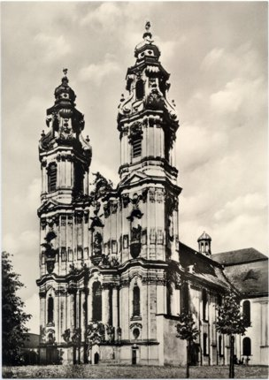
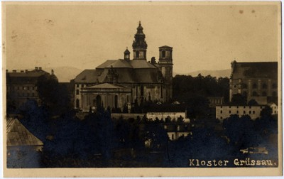

Poniżej kilka skanów i opisów starych pocztówek z Krzeszowa.
 |
#1 Grüssau: Josefskirche. Verlag: Benediktiner-Abtei, Grüssau, Schles. kliknij na miniaturę z lewej strony aby uzyskać więcej informacji. |
| #2 Grüssau Cistersienser-Kloster. kliknij na miniaturę z lewej strony aby uzyskać więcej informacji. |
|
|  | #3 Benediktinerabtei Grüssau. kliknij na miniaturę z lewej strony aby uzyskać więcej informacji. |
| #4 BENEDIKTINERABTEI GRÜSSAU. kliknij na miniaturę z lewej strony aby uzyskać więcej informacji. |
|
| #5 Grüssau i. Schlesien Inneres der Marienkirche. kliknij na miniaturę z lewej strony aby uzyskać więcej informacji. |
|
| #6 Gruss aus Grüssau. 470 m ü. M. Cistercienser Klosterkirche. kliknij na miniaturę z lewej strony aby uzyskać więcej informacji. |
|
| #7 Grüssau - Klosterkirche. kliknij na miniaturę z lewej strony aby uzyskać więcej informacji. |
|
| #8 Skulpturen aus der Klosterkirche Grüssau. kliknij na miniaturę z lewej strony aby uzyskać więcej informacji. |
|
| #9 Krzeszów Opactwo pocysterskie kliknij na miniaturę z lewej strony aby uzyskać więcej informacji. |
|
 |
#10 GRÜSSAU i. SCHL. Gesamtansicht kliknij na miniaturę z lewej strony aby uzyskać więcej informacji. |
| #11 Gruss aus Grüssau kliknij na miniaturę z lewej strony aby uzyskać więcej informacji. |
|
| #12 Grüssau kliknij na miniaturę z lewej strony aby uzyskać więcej informacji. |
|
|  | #13 Kloster Grüssau kliknij na miniaturę z lewej strony aby uzyskać więcej informacji. |
| #14 Farbige Zeichnungen von Dr. P. Aust. Kloster Grüssau kliknij na miniaturę z lewej strony aby uzyskać więcej informacji. |
|
| #15 Portal Grüssau kliknij na miniaturę z lewej strony aby uzyskać więcej informacji. |
|
| #16 Grüssau: Gruft kliknij na miniaturę z lewej strony aby uzyskać więcej informacji. |
|
| #17 Uraltes unser Lieben Frauen Bild kliknij na miniaturę z lewej strony aby uzyskać więcej informacji. |
#18 Deckengemälde der Abteikirche kliknij na miniaturę z lewej strony aby uzyskać więcej informacji. |
#19 Grüssau: Inneres der Marienkirche kliknij na miniaturę z lewej strony aby uzyskać więcej informacji. |
#20 Grüssau: Portal der Abteikirche kliknij na miniaturę z lewej strony aby uzyskać więcej informacji. |
#21 Cistersienser-Klosterkirche zu Grüssau kliknij na miniaturę z lewej strony aby uzyskać więcej informacji. |
#22 Grüssau: Gnadenbild. kliknij na miniaturę z lewej strony aby uzyskać więcej informacji. |
#23 Abteikirche. kliknij na miniaturę z lewej strony aby uzyskać więcej informacji. |
#24 Auf dem alten Friedhof. kliknij na miniaturę z lewej strony aby uzyskać więcej informacji. |
#25 kliknij na miniaturę z lewej strony aby uzyskać więcej informacji. |
#26 kliknij na miniaturę z lewej strony aby uzyskać więcej informacji. |
#27 kliknij na miniaturę z lewej strony aby uzyskać więcej informacji. |
#28 kliknij na miniaturę z lewej strony aby uzyskać więcej informacji. |
#29 kliknij na miniaturę z lewej strony aby uzyskać więcej informacji. |
#30 kliknij na miniaturę z lewej strony aby uzyskać więcej informacji. |
#31 kliknij na miniaturę z lewej strony aby uzyskać więcej informacji. |
#32 kliknij na miniaturę z lewej strony aby uzyskać więcej informacji. |
#33 kliknij na miniaturę z lewej strony aby uzyskać więcej informacji. |
#34 kliknij na miniaturę z lewej strony aby uzyskać więcej informacji. |
#35 kliknij na miniaturę z lewej strony aby uzyskać więcej informacji. |
#36 kliknij na miniaturę z lewej strony aby uzyskać więcej informacji. |
#37 kliknij na miniaturę z lewej strony aby uzyskać więcej informacji. |
#38 kliknij na miniaturę z lewej strony aby uzyskać więcej informacji. |
#39 Grüssau i. Schl. Orig. Fliegeraufnahme kliknij na miniaturę z lewej strony aby uzyskać więcej informacji. |
#40 Benediktiner-Abtei, Grüssau, Nordostseite kliknij na miniaturę z lewej strony aby uzyskać więcej informacji. |
#41 Kloster Grüssau kliknij na miniaturę z lewej strony aby uzyskać więcej informacji. |